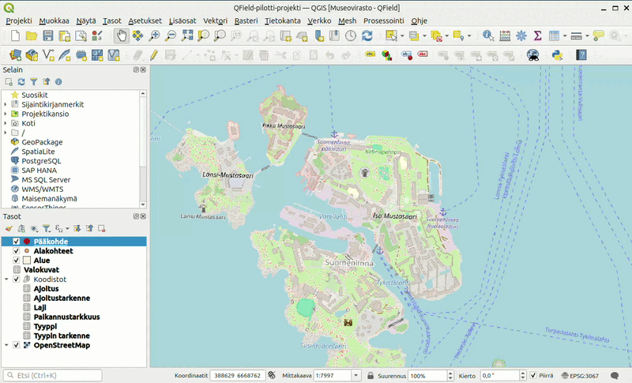

Alkuvalmistelut
- Asenna itsellesi tietokoneelle QGISin viimeisin vakaa versio (LTR).
- Asenna puhelimeesi QField-sovelluksen sovelluskaupastasi.
Lataa GeoPackage-tiedosto:
Projektin avaaminen
GeoPackage-tiedosto sisältää QGIS-projektin sekä kaikki tarvittavat tasot ja taulukot. Avaa QGIS tietokoneellasi ja raahaa lataamasi GeoPackage-tiedosto QGIS-ohjelmaan. Kun päästät irti tiedostosta valitse avautuvasta pop-up ikkunasta ainoastaan QField-pilotti-projekti (kuten kuvassa). Tällöin QGIS avaa projektin ja kaikki tarvittavat tasot suoraan.
Lisäosan asentaminen
Jos et ole aiemmin asentanut QGISin lisäosaa "QField Sync" tee se nyt. Jos et ole varma miten lisäosia lisätään voit katsoa seuraavan videon.

Tässä kuvassa näet miltä projekti näyttää oletusasetuksilla.
Tasot-näkymässä näet oletuksena seuraavat tasot, jotka noudattavat pääosin muinaisjäännösrekisterin kohteen tietojen rakennetta.
| Taso | Tyyppi | Selite |
|---|---|---|
| Pääkohde | Piste | Jokaisella kohteella on ainoastaan yksi pääkohde |
| Alakohteet | Piste | Pääkohteilla voi olla useampia alakohteita. Alakohde liittyy aina yhteen pääkohteeseen |
| Alue | Polygoni | Pääkohteilla tulisi olla aluerajaus, joka tehdään tälle tasolle |
| Valokuvat | Taulukko | Pääkohteilla ja alakohteilla voi olla liittenä valokuvia, tiedostopolku valokuviin tallennetaan tähän taulukkoon |
Ryhmässä "Koodistot" on taulukoita, joista haetaan tietoja muille tasoille, eikä niitä tule muokata tai poistaa. Taulukoista voi kuitenkin katsoa, mitä koodeja on käytössä.
Karttatasojen lisääminen
Voit lisätä projektiin haluamasi karttatasot tai taustakartat projektiin. Projektiin on oletuksena lisätty taustakartaksi OpenStreetMap-rajapinta, mutta tämä on yleensä syytä vaihtaa johonkin muuhun.
QField tukee aineistojen tuontia monipuolisesti eri lähteistä, joten voit hyödyntää maastossa lähes mitä tahansa paikkatietorajapintoja ja -aineistoja. Karttatasojen lähdettä valittaessa huomioi kuitenkin mahdolliset käytännön rajoitteet - esimerkiksi rajapintojen käyttö maastossa vaatii toimivat yhteydet.
Lisätäksesi karttataso rajapinnasta sinun tulee ensimmäiseksi lisätä rajapinta QGISsiin. Jos et ole lisännyt kyseistä rajapintaa aiemmin, muodosta ensin yhteys rajapintaan. Uuden yhteyden muodostamiseksi valitse Browser-ruudusta rajapinnan tyyppi (yleensä WMS/WMTS tai WFS / OGC API - Features), klikkaa sitä oikealla hiirennapilla, valitse "New Connection" ja syötä avautuvaan ikkunaan rajapinnan nimi ja osoite. Kun yhteys on muodostettu, voit avata rajapinnasta valitsemasi karttatason raahamalla sen QGISsin karttaikkunaan.
Erityisesti rajapinnasta tuotujen karttatasojen osalta on syytä tarkistaa QFieldSyncin asetukset karttatasojen paketoinnista QFieldiä varten. Asetuksiin pääset käsiksi QFieldSyncin asetuksista (Configure Current Project), jonka löydät Plugins valikosta tai QFieldSyncin "Package Project for QField" -toiminnon yhteydestä. QFieldSyncin asetusten "Cable Export" -välilehdeltä löydät taulukon kaikista projektin tasoista, jonka Action sarakkeesta voit valita mitä tasoille tehdään pakattaessa projekti QFieldiä varten. Rajapinnasta tuoduille tasoille QFieldSync tarjoaa kaksi vaihtoehdoiksi "Directly access data source" ja "Remove from project". "Directly access data source" säilyttää tason QField-projektissa ja käyttää rajapintaa verkon yli. "Remove from project" poistaa rajapinnan kautta tuodun tason siirron yhteydessä. Paikallisesta tiedostosta tuoduille karttatasoille vastaavat valinnat ovat tapauksesta riippuen "Copy", "Keep existing", "Offline editing" ja "Remove from project".
Cable Export valikon Base Map osiosta voit halutessasi valita yhden karttatason 'taustakartaksi', josta ladataan QField-projektiin ilman verkkoyhteyttä käytettävä paikallinen kopio, joka kulkee projektin mukana. Voit valita ladattavan alueen keskittämällä QGISsin karttaikkunan halutulle alueelle ennen työtilan paketointia QFieldiin. Voit poistaa Base Mapin käytöstä, ellei sille ole tarvetta.
QGIS-projekti viedään seuraavaksi QField-projektiksi omaan puhelimeen. Käytännössä QGIS-projektista tehdään kopio, jota QField-sovellus voi käyttää.